Tema 2: La Construcción del Estado Liberal (1833 - 1868)
El accidentado asentamiento de la monarquía constitucional y parlamentaria en España bajo la hegemonía burguesa.
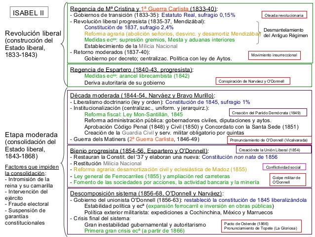
1. La Cuestión Sucesoria y la Primera Guerra Carlista (1833 - 1840)
La definitiva implantación del liberalismo institucional en España se produjo de manera paradójica, vinculada a un conflicto sucesorio dinástico de hondo calado. En mayo de 1830, al anunciarse el embarazo de la cuarta esposa del rey Fernando VII, la reina María Cristina de Borbón, el monarca promulgó la Pragmática Sanción, un decreto que derogaba formalmente la Ley Sálica francesa implantada en 1713 por Felipe V. Esta norma impedía el ascenso de las mujeres al trono, por lo que su abolición aseguraba el camino de la Corona a la primogénita del monarca, la futura reina Isabel II, nacida en octubre de 1830.
Esta decisión marginó de la sucesión al hermano del soberano, el infante Carlos María Isidro de Borbón, quien aglutinaba en torno a sí a los sectores absolutistas más intransigentes del reino. Tras el fracaso realista de forzar la anulación de la medida durante la grave crisis de salud del rey en los Sucesos de La Granja de 1832, el fallecimiento de Fernando VII el 29 de septiembre de 1833 desencadenó la insurrección absolutista. Dos días después, mediante el Manifiesto de Abrantes, el pretendiente reclamaba legítimamente la Corona como Carlos V, encendiendo la mecha de la Primera Guerra Carlista (1833 - 1840).
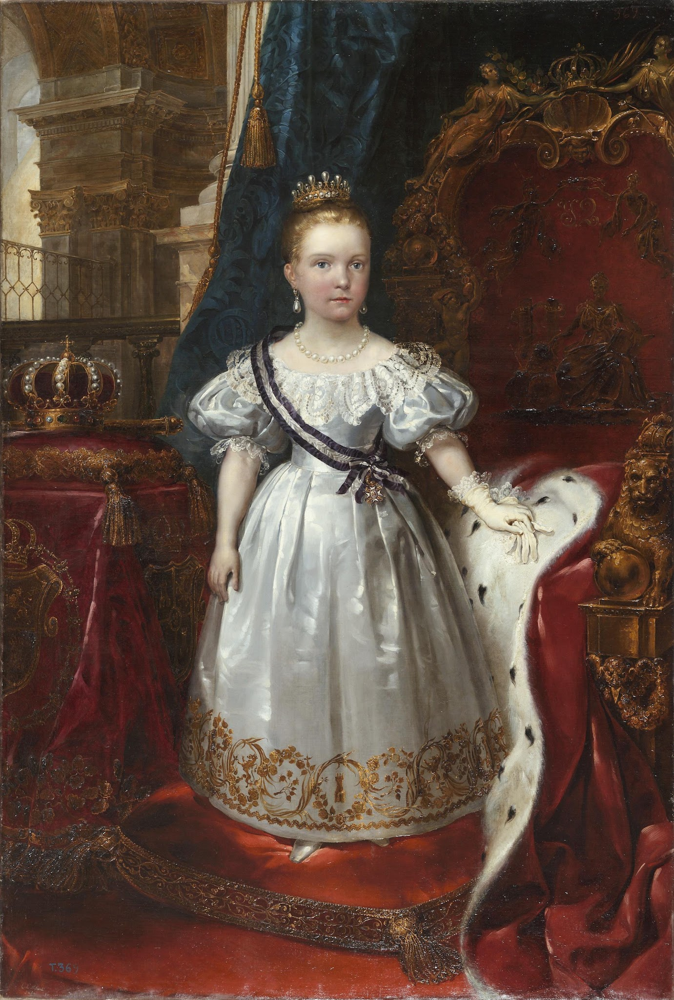
Imagen 1: Retrato oficial de Isabel II niña de corta edad vestida de gala con corona, por Juan Antonio Casado del Alisal. Extraído de tema_04 La construcción del estado liberal (1833 - 1868).pdf.
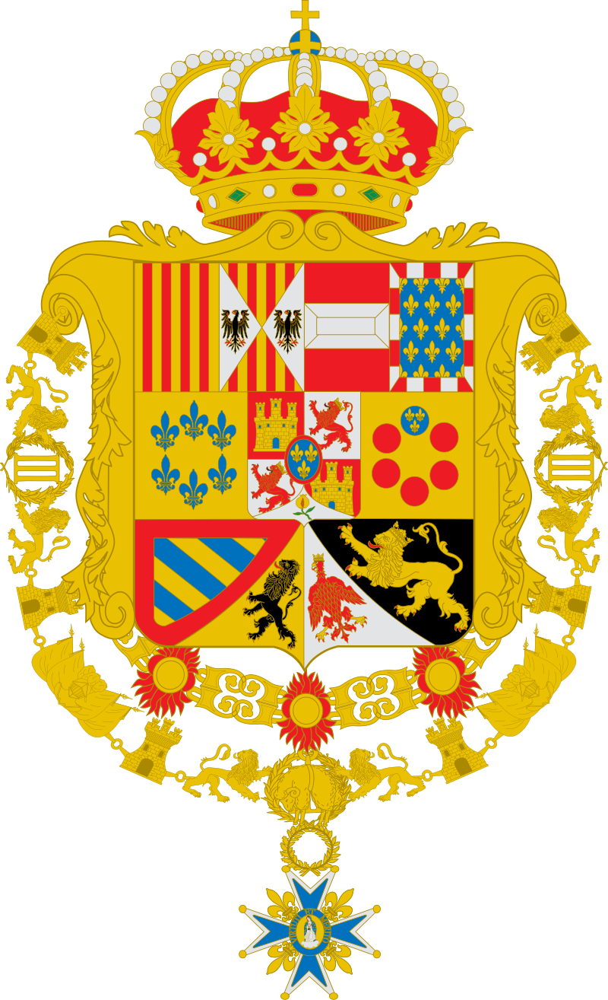
Imagen 2: Escudo de armas simplificado de la monarquía isabelina rodeado por el Toisón de Oro. Procedente del manual TEMA 2_EL REINADO DE ISABEL II.pptx.
La contienda armada trascendió el plano puramente dinástico para convertirse en un choque ideológico y social entre dos modelos incompatibles de civilización:
- El Bando Carlista: Articulado bajo el lema tradicionalista de Dios, Patria y Fueros. Defendía la legitimidad absolutista de don Carlos, la preeminencia institucional de la Iglesia, el mantenimiento de la sociedad estamental y de las estructuras agrarias de origen feudal, así como la conservación de los fueros particularistas regionales vasco-navarros. Socialmente se asentaba sobre el bajo clero rural, la pequeña nobleza agraria y una amplia base de campesinos propietarios, artesanos y arrendatarios, recelosos de los nuevos tributos estatales y de la privatización de tierras promovida por las reformas de libre mercado burguesas. Geográficamente predomino en el medio rural del País Vasco, Navarra, el Maestrazgo castellonense, el Bajo Aragón y el prepirineo catalán.
- El Bando Isabelino o Cristino: Integrado de forma original por la alta nobleza terrateniente, las esferas de la administración pública, la jerarquía militar profesional y la cúpula eclesiástica. No obstante, para asegurar la victoria militar frente al carlismo, la regente se vio abocada a negociar el respaldo de la burguesía industrial y financiera y de las clases populares urbanas, accediendo a cambio a las demandas de desmantelamiento definitivo del Antiguo Régimen y abolición del absolutismo.
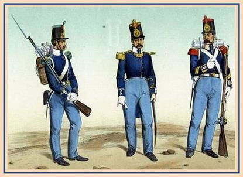
Imagen 3: Ilustración de época que detalla la indumentaria y uniformes oficiales de los oficiales y cuerpos del ejército regular y de la milicia. Procedente del manual TEMA 2_EL REINADO DE ISABEL II.pptx.
Fases Militares del Conflicto
La contienda armada, librada con extraordinaria crudeza y represalias masivas en ambos contendientes, se desarrolló en tres grandes periodos cronológicos peninsulares:
⛰️ Primera Etapa (1833 - 1835): La ofensiva y organización carlista
Al carecer inicialmente de un ejército regular, las partidas absolutistas operaron bajo la brillante dirección militar del general Tomás de Zumalacárregui, verdadero héroe del carlismo. Zumalacárregui organizó militarmente a las fuerzas vasco-navarras y aplicó con maestría la táctica de guerrillas, conquistando Tolosa, Durango, Vergara y Éibar. Sin embargo, presionado por el propio pretendiente para tomar una gran capital que otorgase prestigio exterior al carlismo, Zumalacárregui planeó el asedio a Bilbao, perdiendo trágicamente la vida en 1835 por las heridas recibidas en una pierna durante el sitio, privando de este modo a las fuerzas absolutistas de su estratega más capacitado.
🏹 Segunda Etapa (1835 - 1837): Las grandes expediciones nacionales
Ante la asfixia financiera por no controlar puertos mercantes ni grandes urbes, los carlistas recurrieron a la movilización de columnas por la geografía peninsular. Destacaron la expedición del general Miguel Gómez y la expedición real comandada por el propio pretendiente Carlos V, que llegó a situarse ante las puertas de un Madrid desguarnecido en el verano de 1837, aunque renunciaron a su asalto y regresaron al norte. Paralelamente, el general liberal Baldomero Espartero rompió definitivamente el sitio carlista sobre Bilbao tras su decisiva victoria militar en la batalla de Luchana a finales de 1836, decantando la contienda de manera irreversible en beneficio de la causa constitucional.
🤝 Tercera Etapa (1837 - 1840): División interna y Convenio de Vergara
El agotamiento material fracturó la cohesión interna del carlismo, dividiendo a sus partidarios entre transaccionistas (proclives a pactar un armisticio honorable) e intransigentes o apostólicos. Finalmente, el general carlista transaccionista Rafael Maroto acordó la paz con el general liberal Baldomero Espartero, sellando el histórico Convenio de Vergara (o Abrazo de Vergara) el 31 de agosto de 1839. El tratado preveía la integración de la oficialidad carlista en el ejército real y el compromiso ministerial de recomendar a las Cortes el mantenimiento o modificación de los fueros tradicionales. Únicamente las partidas intransigentes del general Ramón Cabrera (el Tigre del Maestrazgo) resistieron heroicamente en el este peninsular hasta su definitiva derrota en Morella en 1840.

Imagen 4: Litografía decimonónica que representa a Zumalacárregui herido, siendo evacuado a hombros por sus soldados durante el sitio a la plaza de Bilbao. Obtenida de TEMA 2_EL REINADO DE ISABEL II.pptx.
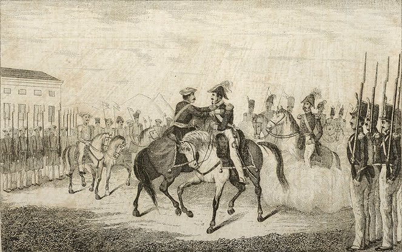
Imagen 5: Grabado del abrazo histórico entre los generales Espartero y Maroto en 1839, símbolo del final de la guerra civil. Procedente de TEMA 2_EL REINADO DE ISABEL II.pptx.
⚠️ Trascendentales Consecuencias de la Guerra Carlista
La prolongada contienda civil dejó profundas huellas en la configuración del Estado liberal del siglo XIX. En lo político, consolidó definitivamente la transición de la monarquía absoluta al régimen constitucional. En lo socioeconómico, provocó una enorme deuda pública que obligó al Estado a decretar de manera urgente la nacionalización y venta de las tierras de la Iglesia para financiar la guerra. Finalmente, en lo institucional, convirtió a los jefes militares (espadones) en los auténticos árbitros de la vida política nacional, iniciándose la práctica generalizada de los pronunciamientos militares.
2. La Época de las Regencias (1833 - 1843)
La minoría de edad de Isabel II obligó al establecimiento de un periodo transitorio de regencias, protagonizado inicialmente por la reina madre, María Cristina de Borbón, y posteriormente por el militar más laureado del país, el progresista Baldomero Espartero. En esta década vertiginosa se consumó el desmantelamiento legislativo de las instituciones jurídicas y señoriales del Antiguo Régimen.

Imagen 6: Cartografía de la península Ibérica que delimita los focos de insurrección carlista y el itinerario de las expediciones militares de Carlos V. Fuente: tema_04 La construcción del estado liberal (1833 - 1868).pdf.
2.1. La Regencia de María Cristina de Borbón (1833 - 1840)
La gestión gubernamental de la reina gobernadora se dividió en tres periodos de profunda agitación doctrinal y legislativa:
- Los Gobiernos de Transición y el Estatuto Real (1833 - 1835): La regente confió el poder inicialmente a un monárquico ilustrado reformista, Cea Bermúdez, quien promovió tímidas medidas administrativas. Entre ellas destacó la nueva división provincial de España en 49 provincias en noviembre de 1833, diseñada con criterios racionalistas y uniformadores por el ministro de Fomento, Javier de Burgos. Ante el avance carlista, la regente llamó al liberal moderado Francisco Martínez de la Rosa, quien pilotó la transición redactando el Estatuto Real de 1834. El Estatuto no era una Constitución, sino una carta otorgada que regulaba el funcionamiento de las Cortes. Consagraba la soberanía compartida (depositaria en la Corona y las Cortes), el derecho de veto absoluto del monarca e implantaba un parlamento bicameral formado por el Estamento de Próceres (aristócratas y prelados designados por la Corona) y el Estamento de Procuradores (elegidos por un sufragio censitario extremo del 0,15% de la población, de apenas 16.000 contribuyentes adinerados sobre doce millones de habitantes).

Imagen 7: Mapa oficial de la división de provincias de España aprobada en 1833 por Javier de Burgos. Extraído del documento tema_04 La construcción del estado liberal (1833 - 1868).pdf.
- La Ruptura Liberal y el Gobierno Progresista (1835 - 1837): El Estatuto de 1834 no satisfizo a los liberales avanzados o progresistas, desatándose motines urbanos populares dirigidos por las clases medias y la *Milicia Nacional*. Estas revueltas, caracterizadas por asaltos e incendios de conventos y la quema de la fábrica textil *Bonaplata* de Barcelona, obligaron a la reina a entregar el gabinete al progresista Juan Álvarez Mendizábal. Para financiar la contienda civil y sanear la colapsada Hacienda pública, Mendizábal puso en marcha en 1836 la célebre Desamortización de Mendizábal, ratificada en ley en julio de 1837. El decreto dispuso la nacionalización y posterior venta en pública subasta de los bienes rústicos y urbanos del clero regular (monasterios y conventos exclaustrados). La destitución del primer ministro por presiones de la regente desató la sublevación militar popular de la Sargentada de La Granja en agosto de 1836, donde un grupo de sargentos de la guardia real forzó a la regente a restablecer la Constitución de 1812 y entregar el poder a los progresistas de José María Calatrava.
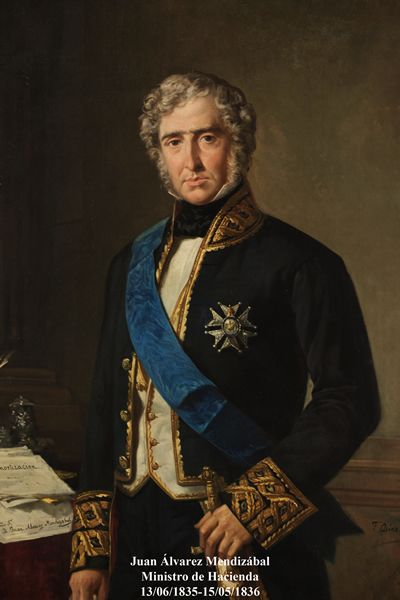
Imagen 8: Retrato oficial al óleo del político liberal progresista Juan Álvarez Mendizábal, promotor de la desamortización eclesiástica de 1836. Fuente: TEMA 2_EL REINADO DE ISABEL II.pptx.
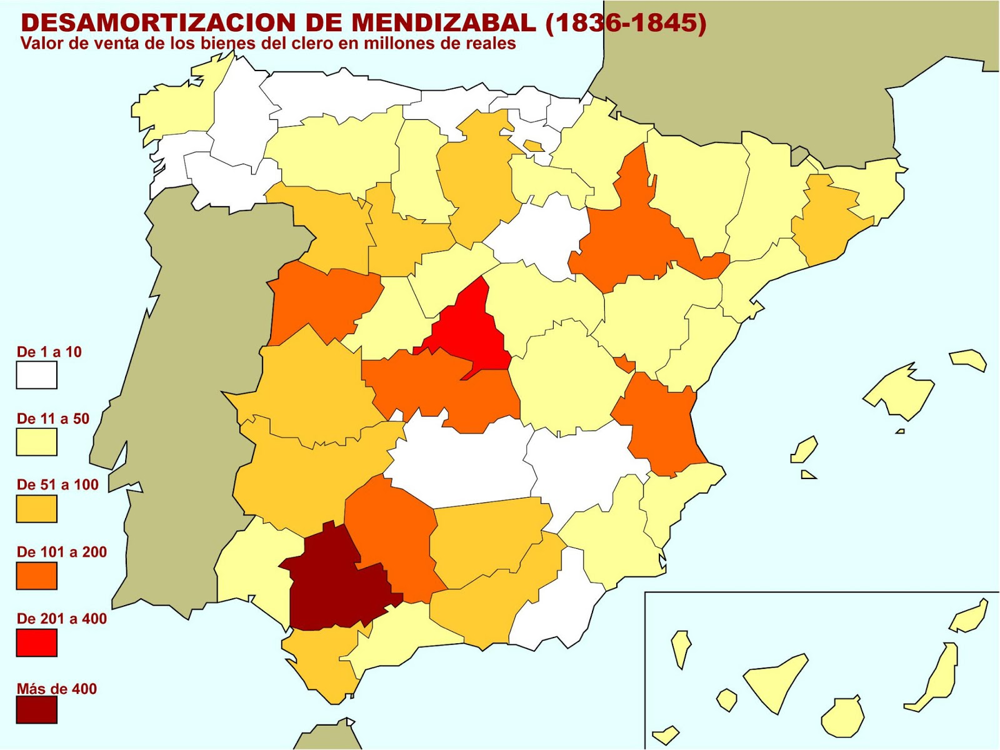
Imagen 9: Mapa de la península que representa por provincias el valor de venta total en millones de reales de los bienes de la Iglesia desamortizados. Fuente: tema_04 La construcción del estado liberal (1833 - 1868).pdf.
Las Cortes constituyentes redactaron un nuevo marco constitucional para encauzar el consenso dinástico: la Constitución de 1837. Fue un texto breve y pragmático que intentó unificar a ambas facciones liberales. De un lado consagraba principios progresistas básicos:
- La Soberanía Nacional.
- La división de poderes.
- Una amplia tabla de derechos individuales (con libertad de prensa libre de censura previa).
- La aconfesionalidad formal del Estado.
- El restablecimiento de la Milicia Nacional.
Del otro lado, incorporaba concesiones de corte moderado para fortalecer la autoridad del trono:
- Un parlamento bicameral (Congreso de los Diputados y Senado, siendo este último vitalicio de designación real).
- Amplias prerrogativas a la Corona (derecho de veto, iniciativa de ley y poder de disolución parlamentaria).
- Un sufragio censitario restringido al 2,4% (varones mayores de 25 años que pagasen una alta contribución).
- El compromiso estatal de sufragar el culto católico tras la pérdida de sus rentas agrarias.
- El Trienio Moderado y la caída de la Regente (1837 - 1840): Tras la aprobación de la Constitución de 1837, los moderados vencieron en las elecciones e intentaron limitar el alcance progresista municipal aprobando la restrictiva *Ley de Ayuntamientos de 1840*. Esta norma retiraba a los vecinos el derecho de elegir de forma directa a sus regidores, otorgando la facultad de nombramiento de alcaldes al Gobierno central. La sanción y firma de esta ley por la reina María Cristina provocó el estallido de un movimiento insurreccional encabezado por Juntas revolucionarias provinciales y la Milicia Nacional. Antes que claudicar ante las demandas del partido progresista, la regente prefirió dimitir y partir al exilio en París en octubre de 1840, cediendo la regencia al militar más prestigioso y carismático de la nación.
2.2. La Regencia de Baldomero Espartero (1840 - 1843)
El general Baldomero Espartero, aclamado por las clases populares como el pacificador de España y líder natural del progresismo, asumió la regencia unipersonal del reino. No obstante, su talante militarista le llevó a gobernar de espaldas al Parlamento, apoyándose exclusivamente en una camarilla de militares fieles denominados despectivamente los ayacuchos por la oposición moderada.
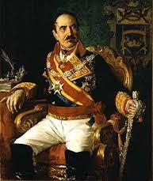
Imagen 10: Retrato oficial al óleo del general Baldomero Espartero, conde de Luchana y duque de la Victoria. Fuente: tema_04 La construcción del estado liberal (1833 - 1868).pdf.
Su política económica, caracterizada por la reactivación de la venta de bienes eclesiásticos (lo que provocó la ruptura formal con el Vaticano y la expulsión del nuncio apostólico), desató su ruina política en el otoño de 1842. Con el propósito de ratificar un tratado de libre comercio de signo librecambista con Gran Bretaña, Espartero propuso rebajar sustancialmente los aranceles aduaneros a los tejidos ingleses. La burguesía industrial de Cataluña y el proletariado textil de Barcelona interpretaron el acuerdo como una condena de muerte para la viabilidad de sus fábricas y puestos de trabajo, protagonizando una gran rebelión urbana.
Espartero reaccionó ordenando el bombardeo militar indiscriminado de la ciudad desde el castillo de Montjuic, lo que destruyó cientos de viviendas, se cobró la vida de civiles y hundió definitivamente su popularidad, uniendo a progresistas y moderados en un frente común de oposición. En julio de 1843, el general moderado Ramón María de Narváez encabezó un pronunciamiento que batió a las fuerzas leales al regente en Torrejón de Ardoz, forzando la huida de Espartero al exilio en Londres. Para solventar el vacío de poder sin designar otro regente, las Cortes adelantaron la mayoría de edad de Isabel II, quien comenzó su reinado personal con apenas trece años de edad y una total falta de formación política.
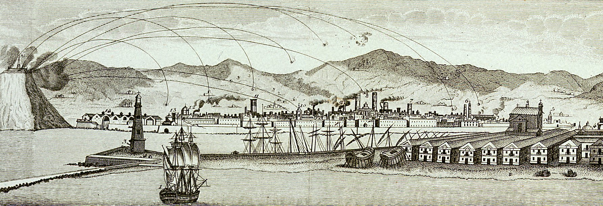
Imagen 11: Grabado histórico del bombardeo de Barcelona ordenado por el regente Espartero en otoño de 1842 para sofocar el motín social catalán. Fuente: TEMA 2_EL REINADO DE ISABEL II.pptx.
3. El Reinado Personal de Isabel II: La Consolidación del Estado Oligárquico (1843 - 1868)
El reinado constitucional de Isabel II representó la consolidación definitiva del sistema político y administrativo liberal en la península, estructurado de forma inequívoca sobre el predominio sociopolítico de la burguesía terrateniente (fruto del mestizaje de intereses entre la vieja aristocracia y los nuevos propietarios burgueses adinerados) y de una monarquía parlamentaria de corte oligárquico.
🔍 Aula de Investigación: La deslegitimación de la Corona
Analiza cómo la vida privada de la reina Isabel II fue utilizada sistemáticamente por la propaganda de la oposición y la sátira del periodo como un arma de combate político para socavar los cimientos de la monarquía moderada. Este ensayo digital de Nueva Tribuna aborda la construcción de esta leyenda negra y su impacto en la desafección popular.
Leer artículo externo ➡️3.1. La Década Moderada (1844 - 1854)
Tras la caída de Espartero y un breve periodo de transición con González Bravo (quien disolvió formalmente la Milicia Nacional), los moderados se hicieron con las riendas del poder. El general Ramón María de Narváez, espadón fuerte de la oligarquía burguesa, asumió la presidencia, poniendo en marcha una monumental labor legislativa encaminada a erigir un Estado centralizado, seguro y centralizado:
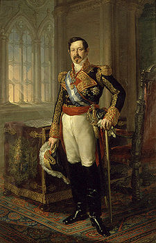
Imagen 12: Retrato fotográfico hacia 1860 de la reina Isabel II de Borbón en la corte de Madrid. Fuente: TEMA 2_EL REINADO DE ISABEL II.pptx.
- La Constitución de 1845: Máxima expresión jurídica de la doctrina del moderantismo. El texto declaraba la soberanía compartida entre la Corona y las Cortes (concediendo a la reina un inmenso poder político: nombramiento y destitución libre de ministros, veto absoluto e iniciativa de ley), organizaba un parlamento bicameral con un Senado vitalicio de designación regia reservado a las élites aristocráticas, limitaba con severidad los derechos de reunión y prensa, y restringía el cuerpo electoral mediante un sufragio censitario extremo que solo permitía votar al 1% de la población adinerada de la nación.
- La Creación de la Guardia Civil (1844): Diseñada por el militar y aristócrata Duque de Ahumada como una fuerza armada profesional e institucionalizada para aplicar la ley, vigilar las comunicaciones y velar por la seguridad de la propiedad privada y las personas, esencialmente en el medio rural (combatiendo con eficacia el bandolerismo).
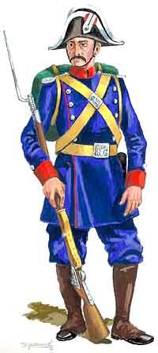
Imagen 13: Ilustración de los primeros guardias civiles con su indumentaria reglamentaria en el año 1845. Fuente: TEMA 2_EL REINADO DE ISABEL II.pptx.
- La Reforma Tributaria de Mon-Santillán (1845): Diseñada por Alejandro Mon y Ramón Santillán para modernizar la maltrecha Hacienda pública. Consistió en refundir el enrevesado e ineficaz sistema fiscal del Antiguo Régimen en un conjunto unificado y racional de contribuciones directas e indirectas, estableciendo el impuesto sobre consumos de primera necesidad para paliar el déficit fiscal general.
- El Concordato de 1851: Tratado internacional con el Vaticano que restableció las relaciones de España con la Santa Sede. El papa reconoció de forma definitiva la legitimidad dinástica de Isabel II y la validez de las tierras ya desamortizadas a cambio de que el Estado proclamara la Unidad Católica del país, se comprometiera al sostenimiento económico del clero mediante el presupuesto de culto y clero, y otorgara a la Iglesia la competencia inspectora e instructora de la educación nacional.
- La Reorganización Administrativa Local (1845): Una restrictiva *Ley de Ayuntamientos* anuló la autonomía municipal, estableciendo que el alcalde de los municipios mayores de 2.000 habitantes y capitales de provincia era designado por la propia Corona, quedando el resto bajo control directo del Gobernador Civil provincial.
La estabilidad de la década moderada se quebró tras la deriva autoritaria de Juan Bravo Murillo en 1852, quien pretendió reformar la Constitución para instaurar una dictadura tecnocrática gobernando por decreto y postergando indefinidamente a las Cortes parlamentarias. La oposición de las propias facciones del moderantismo provocó su caída, desatando acusaciones de severa corrupción administrativa por la concesión de licencias del ferrocarril.
3.2. El Bienio Progresista (1854 - 1856)
En junio de 1854, una facción de militares moderados y descontentos liderados por los generales Leopoldo O'Donnell y Dulce se pronunció en Vicálvaro en la célebre Vicalvarada. Ante el empate militar, la insurgencia se unió al general Francisco Serrano y lanzaron el Manifiesto de Manzanares. La proclama, redactada brillantemente por Cánovas del Castillo, prometía reformas progresistas de regeneración liberal (bajada de tributos, Milicia Nacional y descentralización municipal), desatando insurrecciones urbanas populares en Madrid, Barcelona, Valencia y Valladolid.
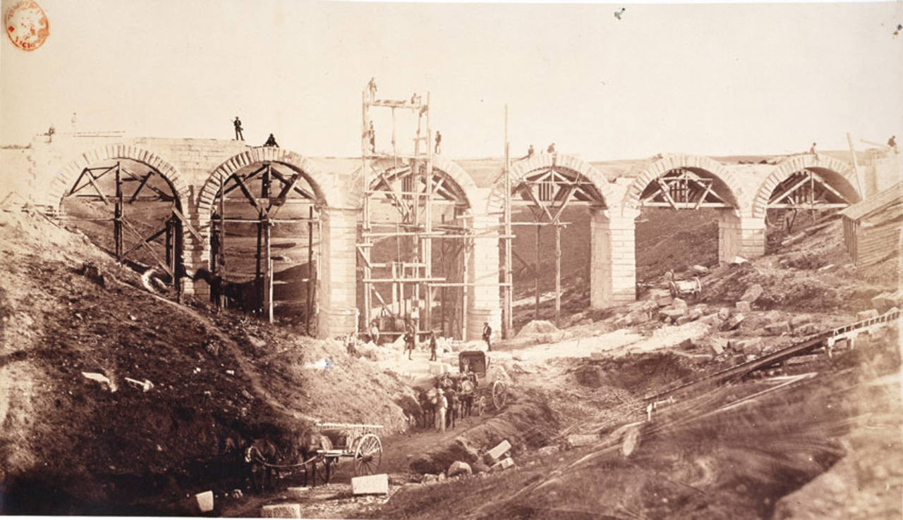
Imagen 15: Grabado del siglo XIX que documenta las espectaculares obras de ingeniería hidráulica para el Canal de Isabel II e infraestructuras del ferrocarril. Fuente: TEMA 2_EL REINADO DE ISABEL II.pptx.
La agitación forzó a la reina a entregar el gabinete al anciano líder progresista Baldomero Espartero, instaurándose el *Bienio Progresista* (1854 - 1856). El nuevo Gobierno impulsó reformas económicas claves de signo industrializador:
- La Ley General de Ferrocarriles (1855): Reguló y ofreció abundantes incentivos y exenciones arancelarias a las compañías ferroviarias privadas (principalmente de capital extranjero británico y francés), propiciando una burbuja inversora e industrial.
- La Desamortización General de Madoz (1855): Diseñada por el ministro de Hacienda Pascual Madoz, sacó a la venta en pública subasta todos los bienes inmuebles amortizados de manos muertas: los que le restaban al clero y, principalmente, los del Estado y de los municipios, englobando bienes propios (arrendados por los ayuntamientos) y bienes comunales de libre disfrute de los vecinos (bosques y pastos comunales). La medida mermó la economía de subsistencia de los jornaleros campesinos pobres de la periferia peninsular al privarles de su aprovechamiento vecinal libre.
- La Constitución de 1856 (Non Nata): Un texto plenamente progresista que consagraba la soberanía popular de forma neta, la completa libertad de cultos religiosos y un Senado electivo, pero que nunca llegó a entrar en vigor.
La parálisis se agudizó por una grave crisis de subsistencias agrarias y huelgas obreras industriales en Cataluña. Las disputas en el Gobierno de coalición forzaron la dimisión de Espartero. La reina confió el poder a O'Donnell, quien declaró el Estado de Sitio, disolvió la Milicia Nacional mediante descargas de fusilería en las calles madrileñas y cerró el Parlamento, finalizando de manera violenta el bienio progresista.
3.3. La Unión Liberal y la Descomposición del Sistema (1856 - 1868)
A partir de 1856 se alternaron en el poder los moderados de Narváez y la *Unión Liberal* de Leopoldo O'Donnell, una formación política centrista orientada a captar a las facciones decepcionadas de ambos bandos del liberalismo. Tras un breve giro autoritario de Narváez, se formó el llamado Gobierno Largo de O'Donnell (1858 - 1863), la fase de mayor desarrollo y bonanza material del periodo constitucional.
La Unión Liberal aprovechó el crecimiento económico internacional para proyectar una política exterior sumamente expansionista y militarista con el objetivo de recuperar el orgullo diplomático español e inflamar el ardor patrio popular de las masas:
- La Guerra de África (1859 - 1860): Motivada por ataques rifeños a las fronteras ceutíes, los ejércitos reales comandados por el general Juan Prim y el propio O'Donnell obtuvieron resonantes éxitos en Castillejos y tomaron la ciudad de Tetuán. La Paz de Wad-Ras permitió la incorporación de Ifni y la ampliación de los límites defensivos de Ceuta.
- Expediciones Coloniales: Destacó la expedición conjunta a Indochina (Cochinchina, 1857 - 1862) junto al imperio francés por la matanza de misioneros católicos; la expedición a México de 1862 al lado de Inglaterra; la efímera reincorporación colonial de Santo Domingo; y la contienda del Pacífico contra Chile y Perú de 1866.
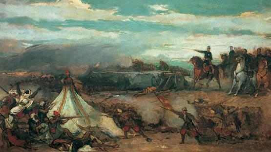
Imagen 16: Lienzo histórico conmemorativo de la Batalla de Tetuán de Mariano Fortuny, exaltando las operaciones militares de la Unión Liberal en el norte de África. Fuente: tema_04 La construcción del estado liberal (1833 - 1868).pdf.
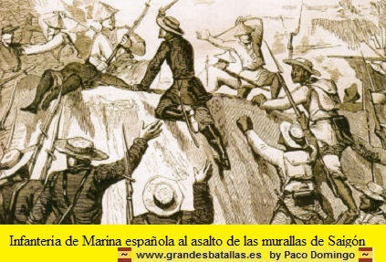
Imagen 17: Grabado de época que ilustra a las fuerzas de la infantería española asaltando las murallas de Saigón durante la campaña de Indochina. Fuente: TEMA 2_EL REINADO DE ISABEL II.pptx.
La dimisión de O'Donnell en 1863 forzó a la reina a recurrir al general Narváez. El sistema isabelino entró entonces en un periodo terminal de parálisis y deriva represiva irreversible:
- La Deriva Autoritaria y la Noche de San Daniel (1865): Los moderados clausuraron las Cortes y reprimieron militarmente toda disidencia civil. La carga militar contra los estudiantes universitarios que se manifestaban en Madrid por la destitución de la cátedra del republicano Emilio Castelar (por censurar las ventas del patrimonio real por la Corona) se saldó con nueve víctimas mortales en la Puerta del Sol, hecho bautizado como la Noche del Matadero.
- La Sublevación de San Gil (1866): Un motín de los sargentos de artillería en el madrileño Cuartel de San Gil, respaldado por demócratas urbanos, fue ahogado a tiros por el Gobierno, concluyendo con el fusilamiento sumario de 66 insurgentes.
- La Multilateral Crisis de 1866: Coincidió con la primera crisis del sistema financiero internacional de signo capitalista. Provocó el desplome de la Bolsa de Madrid por la baja rentabilidad de las concesiones ferroviarias, la quiebra de bancos y el cierre de industrias textiles catalanas por la falta de algodón derivada de la Guerra de Secesión norteamericana. A ello se sumó una grave crisis de subsistencias por malas cosechas de trigo que disparó el precio del pan un 67%, provocando motines de hambre populares en las ciudades.
- El Pacto de Ostende y la Caída de la Reina (1868): La muerte de Leopoldo O'Donnell en noviembre de 1867 y de Ramón María de Narváez en abril de 1868 dejó a la Corona en el aislamiento absoluto. En agosto de 1866, progresistas, demócratas y republicanos habían sellado el Pacto de Ostende en Bélgica para deponer del trono a Isabel II. El 18 de septiembre de 1868 se produjo el estallido militar del almirante Topete y el general Juan Prim en Cádiz, triunfando con asombrosa facilidad el pronunciamiento de la revolución de La Gloriosa. Tras la definitiva derrota de los isabelinos en la batalla del Puente de Alcolea, Isabel II se exilió en Francia el 30 de septiembre de 1868, derribándose la monarquía moderada y abriendo paso al Sexenio Democrático.
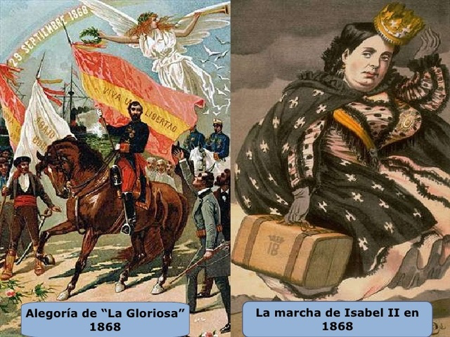
Imagen 18: Izquierda, grabado alegórico del triunfo de la revolución del 29 de septiembre de 1868. Derecha, caricatura satírica de la reina huyendo con sus maletas hacia el exilio. Extraída de tema_04 La construcción del estado liberal (1833 - 1868).pdf.